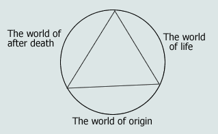

Many people live around us today and each of them has a different nature and different aspect of life among the people.
First of all, in order to understand what is in us, we should know about consciousness, and about the function of the body. As such, let us explore what is meant by the terms “consciousness” and “the human body”. Consciousness is the organ that expresses and decides one’s own intention, and inputs what we see, hear and learn. The human body is our body itself, and is the organ that exists for the action of consciousness and growth of consciousness.
The reason that people have different natures and interests is because things that have been input in each consciousness are different respectively. One interesting thing is that even if a very small thing goes into a consciousness once, it doesn’t disappear easily and continuously influence one’s own actions. The origin of consciousness comes into being by things that are latent in oneself, and such things exist through what happened in oneself. Therefore, all the activities are the way to make oneself be, and all the things in the world of life exist through actions.
If we know ‘What is’, and make good things through ‘What is’, then the consciousness accepts it. if we know incorrectly and make a bad thing comes into being, the consciousness accepts the bad thing. Things that are accepted in such a way have an influence on the actions of the consciousness.
One may want to live well, but the reason this doesn’t work is because of things in the self. We call karma those things in the consciousness that cause the self to move, and this karma comes into being through things that had existed previously to the self.
If karma disappears from a living one, this one reaches Salvation, and is able to become an enlightened being. Therefore, whoever knows such a thing begins not to make mistakes easily, that is, not to behave carelessly about 'What is'.
The reason the human world has wished for Enlightenment is to live knowing such a thing. Also, if there is enlightenment in people, people see ‘what is’, and depend on ‘what is’, rather than relying on their thinking.
The consciousness of a person is moved by things in the past which had been input in the self. The phenomena that appears due to such a thing are infinite in variety. This is why certain people without formal education and inherited property don’t make mistakes in what they are doing, and are successful in what they do, so that they live accumulating abundant property. On the other hand, certain people with education in a good university and much inherited wealth do not quite succeed.
Such things happen according to the influence of the karma that is connected and descended from the past. However much one studies, if one doesn’t realize correctly the things in the world, then such things cannot be changed.
There are words from the past, ‘See the person’s origin and foundation in order to know the person’. This means to see the person’s life and behavior in order to make friends with that person.
However much you are active, you cannot do a thing that is not in yourself, and you are not able to do a thing that you don’t know. Therefore, no one can hide their origin, and the things that are in the foundation of ones origin.
The origin of life is made by things that have existed in the self, the origin to be better or worse is decided by things that have existed in the foundation. No matter how much one studies, if one doesn‘t realize what is, one will not be able to accept good things and make good things exist in oneself.
The reason for many of the problems in our society nowadays originates from this point. Then, why do these problems occur? When people do certain things, people who has poor foundation of their origin depend on their thought or depend on others in many cases. In the process people come to make a mistake.
Such a thing isn’t easily corrected, and repeats continuously as long as there is no enlightenment. And the reason that enlightenment doesn’t occur easily to such people is also because of things in their origin.
The reason their origin is poor is because the action of karma is big in their consciousness, and this karma causes them to see things of the world through ‘what was’ in their self, so enlightenment is not accepted easily. The reason that the karma doesn’t accept the enlightenment is because that enlightenment does things that extinguish the karma.
Enlightenment in the world of consciousness is the way to solve the problems oneself has, and to better oneself through changing endlessly. Depending on whether to know or not know the way, the life itself changes.
Life expresses itself through the action of consciousness and accepts what it listen and see. Things that happened here determine not only matters in the world of after death, but also of reviving to life and things that will happen in the next life.
The reason that such a thing happens is because the action of life comes to exist in the consciousness and things that exist in the consciousness appear through the action of life. There are many people who are not willing to believe such a thing. This happens in the people who don’t have much virtue. People who say there is not a world after death are denying about what they have to experience.
What is meant by the world of after death is the world after the action of life has come to a stop, and refers to the world where only consciousness exists in the state of consciousness and body detached. Most people don’t have correct knowledge about the things of such a world. Sometimes books about the world of spirits are published but the majority are limited and end as a tale.
Everyone comes to meet death if they are born. Most of their consciousness passes through to the world of spirit. The world of spirit can be compared to plants abandoning their self, leaving behind cereals when it bears fruit. Spirits can be compared to the fruits.
The fruits keep what happened in the self, and when they meet ground again, they are revived and make a new world of life come into being and begin to act again through things that had been input in the self.
The spirits of human beings is also made through the action of consciousness, and the soul that is made in such a way meets a new world of life by things in the self.
Whilst not easy to confirm, some different dimensions of the spiritual world exists in the world of after death. This world is strictly controlled by the law of nature, and the spirits of human beings that remain in the world of after death are determined by what was in the self.
The spirit of human beings is comprised of gas, with consciousness input in the gas. Therefore, in a certain case, spirits can see and feel like a living consciousness and don’t easily assimilate with others.
The life span of spirits is different according to whereabouts in the world of after death the spirit remained, and when the consciousness that sticks to the spirit becomes extinct, it is said the life of the spirit is finished.
However, things that are latent in the soul do not easily become extinct, and soon transfer to the other world. The transformation effects are different depending on what was in the soul, but generally they revert to the world of life.
Things in one’s own life are connected endlessly, and one comes to live past, present and future through what was in oneself.
One certain thing is that if there are not good deeds done in the self it is difficult that a good self is born. The world makes all things come to exist by the law of cause and effect.
The reason that enlightenment is important in the life of human beings is that they should know “What is” correctly. Because things that were in us are the origin that causes our life to be good and bad. Therefore, if people live without knowing “What is”, it is living to desert the real blessing of life.
The Life of human beings is made up with a consciousness and a body. Consciousness comes to perform the action of life utilizing the organ of a body, and a body helps the action of consciousness through using the structure of the human body.
The process of life reviving, as a seed revives through using the energy of the ground, is analogous to the process a soul undergoes.
In modern society, just because a person graduated a good university or has a high social standing, it cannot be seen that that person has a good origin.
However much knowledge one has, one cannot be a good person if one doesn’t know a good thing. So if a person with a poor origin of consciousness takes charge of work great responsibility, then that person will ruin things of the world. However much one is accomplished at study and the brain is active, it isn’t true that such a person is good at any kind of work.
The reason that there are so many problems nowadays in society is because the society does not value the consciousness of its people, but instead values a person with intelligence. Such answers can be easily confirmed any place.
Nature accepts everything but shows existent things as they are.
As an analogy, no matter how much one is active, when one’s origin is from wild persimmon, the result is to bear wild persimmon, and no matter how much it may act in a poor environment, when the origin was a sweet persimmon, it makes the result bear sweet persimmon.
Even if they act from the same foundation, according to their origin, it is made to bear different fruit in the world of life.
Growth and change of consciousness happens using the body. Therefore, if there occurs abnormal symptoms or trouble arises in the body, then problems occur to the action of consciousness as a tool. There are many organs in the human body, and the human body either makes power using itself or comes to move by the instruction of consciousness.
The Human body can cause trouble to the action of consciousness through disease or physical defect, and in more severe cases, it can decrease the function of consciousness itself. However, it is rare for troubles in the human body to arise because it is controlled and restored by the regulation ability of itself, while it fulfils vigorous life activity.
There are instances that trouble arises for the human body. When a human takes food, a substance that is poisonous can enter the body. Other instances are infection of a virus, or when the body is damaged by accident.
Another possibility is that a spirit which is not the person itself will stick to the person’s body and be active. In that case, it will cause a lot of trouble to the action of the body, and in more serious cases, it ruins the consciousness itself.
The object that one has to be most careful of during the activity of life is the spirit of dead people, and these spirits be closed to the human body.